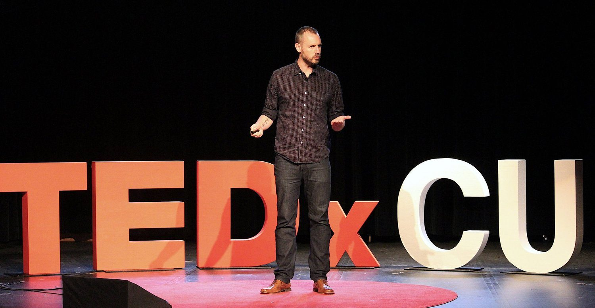

Public Speaking
TEvery organization and individual wants to be more resilient, more effective and to push on the boundaries of what is possible. The danger in the pursuit is going too far and investing energy into things that don’t actually work, or even worse, hurting performance. Investigative journalist and anthropologist Scott Carney has spent his career looking for opportunities for growth and debunking charlatans and false gurus. The most perplexing part is that sometimes the very people who open the door to fantastic new insights are also the ones who tip over the edge.
In 2011, Carney wrote an article for Playboy about the dare-devil ice guru Wim Hof with the intention of showing the world that he was a charlatan. This certainly wasn’t Carney’s first time setting out to expose someone he perceived to be a peddler of dangerous wellness practices, but this assignment didn’t work out the way he had expected – Hof’s method worked.
Instead of debunking him, Carney became the first journalist to take Hof and his methods seriously, trying everything from freezing ice baths to climbing Mt. Kilimanjaro without a shirt. He wrote a book about his experiences – a New York Times Bestseller called What Doesn’t Kill Us – and embarked on a yearslong journey of developing new environmental training techniques.
The science is complex, but the idea is simple. It isn’t dumb luck that our ancestors were able to walk across the freezing tundra and scalding desert without a fraction of the technology we have today. We all possess natural mechanisms for handling external stressors but, in our climate-controlled, perfectly temperate homes and offices, we have become addicted to comfort and neglect what lies just below the surface.
A few years later, Carney wrote another book called The Wedge and now travels the country teaching teams to use their environments to get in touch with their emotions, embrace risk and use sensations from the environment to manage the stresses of everyday life – especially in the workplace.
Then, in 2022 Carney started getting reports of people dying while they practiced Hof’s method–all using an advanced variation of Hof’s teachings that they learned directly from Hof’s courses and YouTube videos. Carney collected 33 reports over a few months as well as evidence that Hof had abusive relationships with women in his life. He realized he had a duty to update Hof’s story.
Now Carney sits at the complex intersection between inspiration and reality. How is it possible to learn from a madman without becoming mad oneself? How do we learn to push boundaries without going over the edge and optimize our health without becoming slaves to optimization protocols that were meant to set us free?
The good news is that, by paying attention to physical sensations and learning how to regulate our emotional responses, we have the power to change our underlying programming. Carney’s seminars can teach your team to get in touch with a deeper, more resilient version of themselves, and participants will walk away with simple self-care techniques that even the biggest skeptics can get behind. He’s given talks to crowded ballrooms with thousands of people in the audience, and in conference rooms with top thinkers on university campuses, in tech centers and business enclaves.
Carney has a popular YouTube channel where he specializes in debunking charlatans and health grifters. A recent video exposed the criminal past of the founder of Athletic Greens and resulted in a complete reorganization of the company.
To see him on stage take a look at a speech he recently gave in Aspen about the Wim Hof method and underlying principles of The Wedge. Or this Ted talk about how the environment alters human biology.
We would love to talk to you about having Carney speak at your event, to help build effective leadership teams and take your organization to the next level.
Here’s what other thought leaders are saying about Scott’s work.
“Scott tackles big topics – stress, resilience and finding the linkage between physicality and spirituality – showing us his willingness to challenge our conventional assumptions.
– Brad Stulberg, best selling author of Peak Performance
Prepare to enter an intriguing world of self-improvement and physical and mental performance that you’ve ever before discovered”
– Ben Greenfield, New York Times best selling author of Beyond Training.
“Damn fun and extremely well researched”
– Steven Kotler, New York Times Best selling author of Stealing Fire
“We are all in this together. Crazy good writing.”
– Wim Hof, fitness guru and Iceman
Categories: Author and Writer, Campus, Ethics, Health Care, Health Care - Mental Health, Addiction and Recovery, Motivation, TED Talk
Get in touch to schedule an event today.